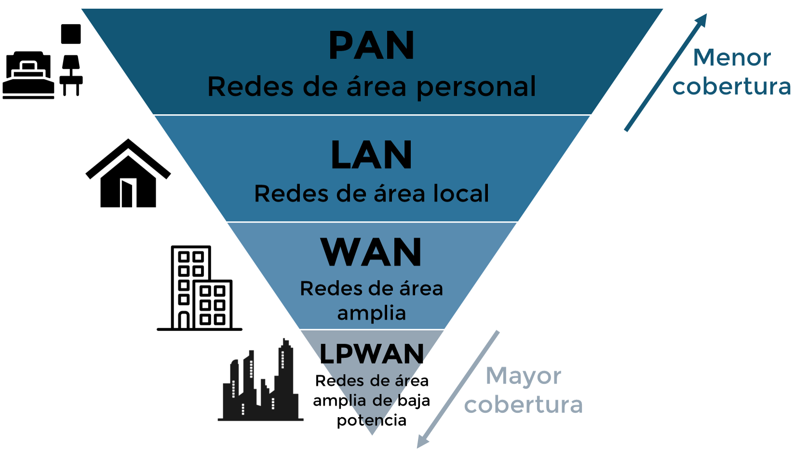

Tipos de redes aplicadas en IoT
En el contexto del Internet de las Cosas (IoT), la conectividad entre dispositivos es una piedra angular para el funcionamiento eficiente de cualquier sistema. Las redes de comunicación permiten que sensores, actuadores, controladores y plataformas en la nube intercambien información en tiempo real, habilitando aplicaciones tan diversas como el monitoreo ambiental, la automatización industrial, la gestión urbana y la salud inteligente. Comprender las distintas categorías de redes utilizadas en IoT y sus características técnicas es esencial para tomar decisiones acertadas en el diseño de soluciones.
Clasificación de redes por alcance
Figura 1: Clasificación jerárquica de redes IoT por alcance. Elaboración propia
Las redes utilizadas en sistemas IoT pueden clasificarse según su cobertura geográfica, lo que influye directamente en el tipo de aplicaciones que pueden soportar. Se reconocen cuatro tipos principales:
- Redes de área personal (PAN): Suelen cubrir distancias de unos pocos centímetros a metros. Se utilizan para comunicación entre dispositivos portátiles, sensores personales o en aplicaciones donde la proximidad es clave.
- Redes de área local (LAN): Se extienden hasta unos 100 metros. Son comunes en hogares inteligentes, oficinas y entornos industriales donde se requiere conectividad de alta velocidad y moderada cobertura.
- Redes de área amplia (WAN): Alcanzan varios kilómetros y son utilizadas para conectar dispositivos distribuidos en zonas urbanas o rurales.
- Redes de área amplia de baja potencia (LPWAN): Diseñadas para cubrir largas distancias (hasta decenas de kilómetros) con un consumo energético extremadamente bajo, ideales para sensores en ubicaciones remotas.
| Tipo de red | Alcance típico | Aplicación general |
|---|---|---|
| PAN (Personal Area Network) | Centímetros a pocos metros | Wearables, sensores personales, comunicación entre microcontroladores |
| LAN (Local Area Network) | Hasta 100 m | Hogar inteligente, sistemas multimedia, nodos centralizados en plantas |
| WAN (Wide Area Network) | Varios kilómetros | Vehículos conectados, ciudades inteligentes, logística |
| LPWAN (Low Power WAN) | Hasta 10-15 km | Agricultura, monitoreo ambiental, infraestructuras remotas |
Descripción y ejemplos por tipo de red
Video 1:
Conceptos básicos de Redes inalámbricas
Ver desde 1:10
-
PAN (Red de Área Personal):
- Bluetooth Low Energy (BLE): Bajo consumo, ideal para wearables y sensores portátiles. BLE se posiciona como una tecnología crítica para la comunicación interpersonal entre dispositivos de salud o deportivos.
- ZigBee: Permite redes en malla robustas. En entornos de domótica es valorado por su escalabilidad y tolerancia a fallos.
-
LAN (Red de Área Local):
- Wi-Fi: Alta velocidad, alta demanda energética. Recomendado en entornos con acceso a alimentación eléctrica. Se identifica como una tecnología clave en la capa de red del IoT tradicional.
-
WAN (Red de Área Amplia):
- LTE / 5G: Ofrece alta velocidad y baja latencia, adecuado para video, telemetría móvil y logística. Estas tecnologías son necesarias para las aplicaciones urbanas masivas.
- NB-IoT (Narrowband IoT): Red de banda angosta para sensores con bajo volumen de datos. Ideal para medidores inteligentes o monitoreo de activos fijos.
-
LPWAN (Red de Área Amplia de Baja Potencia):
- LoRa (Long Range): Extremadamente bajo consumo y gran alcance. Es tecnología habilitadora para monitoreo de cultivos, forestación o redes de sensores dispersos.
| Tecnología | Cobertura | Velocidad | Consumo energético | Aplicaciones |
|---|---|---|---|---|
| BLE | Baja | Media | Muy bajo | Wearables, sensores personales |
| ZigBee | Media | Media | Bajo | Domótica, automatización local |
| Wi-Fi | Media | Alta | Alto | Streaming local, mashups en sitio |
| LoRa | Alta | Baja | Muy bajo | Agricultura, sensores ambientales |
| NB-IoT | Alta | Baja | Bajo | Infraestructura urbana, servicios públicos |
| LTE-5G | Muy alta | Muy alta | Medio/alto | Vehículos conectados, vigilancia en tiempo real |
Figura 2: Comparación de especificaciones de cada red.
Criterios metodológicos para la selección de tecnología de red
Seleccionar la tecnología de red adecuada para una solución IoT no es una tarea trivial. Existen múltiples factores que deben ser analizados simultáneamente para asegurar que la conectividad sea eficiente, sostenible y funcional según los objetivos del sistema. Una de las metodologías más útiles para este fin es el diseño de un espacio tridimensional de decisión, el cual contempla tres ejes principales:
- Duración de batería: Evalúa la autonomía energética requerida. Algunas tecnologías están diseñadas para operar durante años sin intervención (como LoRa o NB-IoT), mientras que otras como Wi-Fi necesitan fuentes de energía constantes.
- Tasa de transmisión o duty cycle: Mide cuántos datos se transmiten y con qué frecuencia. Dispositivos que solo envían unos pocos bytes por día requieren tecnologías muy distintas a aquellos que transmiten imágenes o video en tiempo real.
- Distancia al gateway o estación base: Determina el alcance requerido entre el nodo IoT y el punto de acceso a la red. Algunas soluciones se limitan a entornos de proximidad, mientras que otras deben operar a kilómetros de distancia.
Visualizar estas variables en un modelo 3D permite comparar tecnologías de manera sistemática. Por ejemplo, BLE tiene una duración de batería excelente, pero cobertura limitada. LTE puede enviar grandes volúmenes de datos, pero a un alto costo energético. Este enfoque ayuda a los desarrolladores y diseñadores a alinear las capacidades tecnológicas con los requerimientos del caso de uso.
Además, esta metodología permite anticipar escenarios futuros, como el escalamiento del sistema o la integración con nuevas plataformas. Pensar en estos tres ejes desde el inicio del diseño contribuye a implementar soluciones más robustas, sostenibles y adaptables.
Aplicación práctica
La correcta selección de la red depende del caso de uso. Por ejemplo:
| Aplicación | Tecnología recomendada | Justificación |
|---|---|---|
| Agricultura remota | LoRa o NB-IoT | Bajo consumo, alta cobertura, mínimo mantenimiento |
| Hogar inteligente | ZigBee, Wi-Fi | Alta velocidad, redes en malla, buena integración |
| Seguimiento de flotas | LTE/5G | Alta disponibilidad, velocidad, movilidad |
| Wearables de salud | BLE | Comunicación segura, bajo consumo, cercanía técnica |
La elección de la red depende de factores como la autonomía energética, la cantidad de datos transmitidos, la ubicación geográfica del sistema y la disponibilidad de infraestructura. En entornos rurales, las tecnologías LPWAN como LoRa o NB-IoT son preferibles. En cambio, en espacios cerrados con acceso a electricidad, Wi-Fi o ZigBee permiten una conectividad más robusta y rápida. Para aplicaciones móviles o de alta velocidad, LTE y 5G son esenciales.
Conclusiones
La diversidad de escenarios en los que se implementan soluciones de Internet de las Cosas demanda una selección cuidadosa y contextual de la tecnología de red. No existe una solución única que se adapte a todos los casos; cada aplicación impone requisitos particulares en términos de cobertura, velocidad de transmisión y consumo energético. Por ello, el análisis del entorno y los objetivos del sistema es crucial al momento de elegir la conectividad adecuada.
Un aspecto fundamental en este proceso de selección es lograr un equilibrio entre el consumo energético, la velocidad de transmisión de datos y el alcance geográfico. Este balance permite desarrollar soluciones eficientes, sostenibles y capaces de operar durante largos periodos sin intervención constante, especialmente en contextos de difícil acceso o con limitaciones energéticas.
Además, la interoperabilidad entre diferentes redes y dispositivos se está consolidando como un factor determinante en el desarrollo de sistemas IoT modernos. A medida que estas tecnologías se expanden a nuevos sectores industriales y regiones geográficas, la capacidad de integrar múltiples estándares y plataformas se convierte en un diferenciador clave para garantizar la escalabilidad y el éxito a largo plazo de los sistemas implementados.
Referencias
- A. Al-Fuqaha et al., "Internet of Things: A Survey on Enabling Technologies, Protocols and Applications," IEEE Communications Surveys & Tutorials, vol. 17, no. 4, pp. 2347–2376, 2015.
- G. Borgia, "The Internet of Things vision: Key features, applications and open issues," Computer Communications, vol. 54, pp. 1-31, 2014.
- A. Čólaković and M. Hadžialić, "Internet of Things (IoT): A review of enabling technologies, challenges, and open research issues," Computer Networks, vol. 144, pp. 17–39, 2018.
- J. Lin et al., "A Survey on Internet of Things: Architecture, Enabling Technologies, Security and Privacy, and Applications," IEEE IoT Journal, vol. 4, no. 5, pp. 1125–1142, Oct. 2017.
- H. Kashif et al., "Selection of Network Protocols for Internet of Things Applications: A Review," IEEE Int. Conf. on Semantic Computing, 2020.
- N. Shahid and S. Aneja, "Internet of Things: Vision, Application Areas and Research Challenges," IEEE I-SMAC, pp. 583-585, 2017.